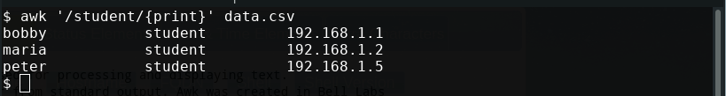
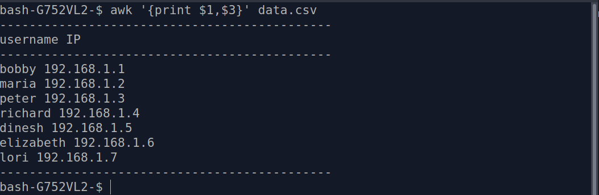
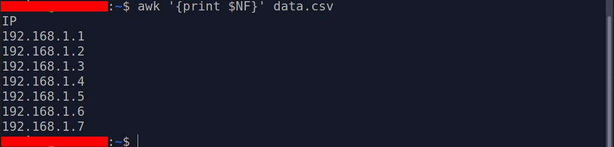
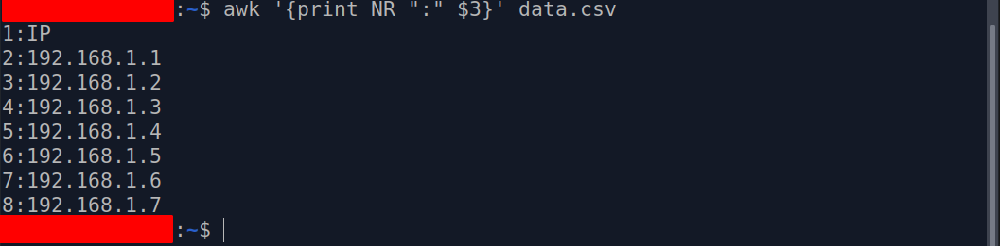

Awk is a scripting language used for processing and displaying text.
Awk can work with a text file or from standard output. Awk was created in Bell Labs
during the 70s by Alfred Aho, Peter Weinberger, and Brian Kernighan and its name comes
from its authors' initials. There are several implementations of Awk: nawk, mawk, gawk, and busybox.
From Stackoverflow by the user: Gilles 'SO- stop being evil'.
AWK is a programming language. There are several implementations of AWK (mostly in the form of interpreters). AWK has been codified in POSIX. The main implementations in use today are:
If you only care about standard features, call awk, which may be Gawk or nawk or mawk or some other implementation. If you want the features in GNU awk, use gawk or Perl or Python.
awk [options] [action with or without selection] [file or standard output redirection] [file to save (optional)]
Print all lines that contain a given string
awk '/student/{print}' data.csv
Awk can split a file into fileds. It does it using field variables represented by their position in the line. For example, the sentence "Bill plays pong" will be splitted in $1="Bill" $2="plays" $3="pong".
awk '{print $1,$3}' data.csv
Using the awk NR command to keep count of the lines
awk '{print NR,$1}' data.csv
Using the NF variable, awk prints the last field.
awk '{print $NF}' data.csv
Using the NR command to print specific lines
awk 'NR==2, NR==5 {print NR, $0}' data.csv
Print specific lines with separator
awk '{print NR ":" $3}' data.csv
Count the number of lines in a file
awk 'END {print NR}' data.csv
Print all the lines that have more, less, or an exact number of characters (>,<,==)
awk '{length($0) > 15}' data.csv
For more information,
Read the man page
Visit GeeksforGeeks Awk's page
Visit Daniel Han's Technical Notes
Read The Awk Programming language
Read Awk Command Tutorial by Pradeep Kumar